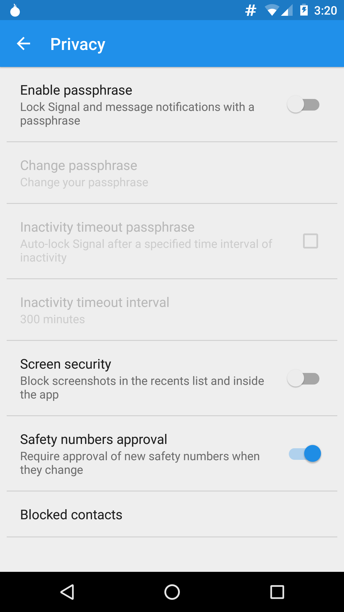

Seattle III
Welcome!
I'm your host, Alex Jordan.
But you can call me AJ.
Huge thanks to UW, and to Peter
They're hosting this event for free.
Roadmap
Why privacy?
Privacy basics
Tor
Off-The-Record (OTR)
Signal
Honourable mentions
By the way
Talk to me!
Feedback, questions, jokes, whatever. (And yes, there are no dumb questions.)
Am I boring you? Tell me!
Raise your hand if you use...
Windows
macOS
GNU/Linux (e.g. Ubuntu, Debian, Fedora, etc...)
Something else (e.g. a BSD)
I don't know
Democracy
Breaking laws is an important part of democracy
Example: sit-ins
If no one ever broke unjust laws, we wouldn't know why they were bad
It's about balance
Activism
Some people are activists
Not many people use privacy tools
Scenario: no one uses privacy tools
In this scenario, everyone is a target
The government analyzes everyone's conversations...
and figures out who the activists are
What if the activists are secure?
Activists use privacy tools, and everyone else doesn't have to worry
Problem solved, right?
What if the activists are secure?
Not really.
Now they're even easier to pick out.
The solution?
Everyone needs to use privacy tools.
That way, everyone looks the same.
Let's keep this short.
Encryption is the process of using a key, like a word or a number, to scramble some text so that it can't be read unless you have the key
Decryption is the process of using that same key to unscramble the encrypted text
Plaintext is text that has not been encrypted
Cryptography is the study and practice of encryption
We encrypt things to protect our privacy
Your threat model
Threat modeling is about defining the problem you're trying to solve
For example: "I expect that I only have to worry about mass surveillance."
Alternately: "I'm assuming that I have been specifically targeted for surveillance by the state."
You need to figure out your own threat model and base decisions on it
My assumptions
I'm assuming your threat model includes only mass surveillance.
Otherwise, these suggestions are a good start, but not all you need.
If you're an investigative journalist, the tools showed here are not good enough.
If you're heavily involved in activism, the tools showed here are not good enough.

Tor
What is Tor?
You know in those old movies where some kid is breaking into a computer and it shows the map, with the connection bouncing all around the world?
That's basically what Tor is.
Tor anonymizes you by making it seem like your Internet traffic is coming from a random location in the world
Tor can also help you circumvent censorship
Using Tor
Tor isn't useful on its own
You use normal applications - like email, chat and your web browser - and tell them to use the Tor network instead of the regular Internet.
For your web browser, you use the Tor Browser Bundle
For other applications, you use their proxy settings
For BitTorrent, you do nothing. Don't use BitTorrent with Tor.
For even higher security, you use Tails
The Tor Browser Bundle
TBB is a browser, based on Firefox, that is preconfigured to use Tor properly
It will help you connect to the Tor network and remain anonymous online
However, TBB cannot do everything. You may need to change some of your browsing habits.
What you need to do
Don't use browser plugins
Don't open downloaded documents while online
Be aware of logging in to websites (you aren't anonymous if you tell them who you are)
Tails, The Amnesiac Incognito Live System
Tails is like the TBB, but it works for the entire computer
Instead of starting Tails from your hard drive, you put Tails on a CD and start the computer from the CD
When you shut down Tails, it forgets everything you did
Restart Tails in-between tasks
The warning about signing into things still applies
Getting Tor
Download the Tor Browser Bundle and unpack to your desktop. It is self-contained, no need to install
If you need extra security you may wish to verify its signature to ensure it hasn't been tampered with
For Android, you can get Orbot from the Google Play Store or from F-Droid (recommended).
The Tor wiki has a section detailing how to get and use Tor with other software.
Exercise: install the Tor Browser Bundle
Tor Messenger + Off-The-Record
Off-The-Record basics
IM + privacy = Off-The-Record
OTR encrypts your chat messages so that no one read your conversations.
Not even the chat service.
The tech
OTR manages your keys for you.
You just turn it on, challenge the other person with a question that only they would know (to make sure that it's really them), and talk
One caveat: OTR only works after the first message. (Consult your threat model.)
So how do I use it?
Get Tor Messenger
Tor Messenger uses OTR by default, so you can just start a chat with whoever
It also sends traffic through the Tor network
Congrats! Your conversations are now private.
Warnings
Tor Messenger is in beta
Consider avoiding it (for now) if you're highly-targeted
Also, it doesn't store logs by default
Exercise: installing Tor Messenger and star
Congrats! Your conversations are now private.
Warnings
Tor Messenger is in beta
Consider avoiding it (for now) if you're highly-targeted
Also, it doesn't store logs by default
Exercise: installing Tor Messenger and starting a chat

Signal
Signal
Register with your phone number
End-to-end encrypted texting and calling
Works only with other Signal users
Safety numbers
Each conversation has a safety number
Safety numbers change when the other person reinstalls Signal
They also change when someone's impersonating the other person
Verifying safety numbers
Open the other person's conversation and call them
On Android, tap the conversation menu, then "verify safety number"
On iOS, tap the other person's name at the top, then "verify safety number"
Read the numbers aloud to the other person to compare
Make sure Signal notices safety number changes

Final notes
On Android, you can set Signal to receive SMS messages too
If you reinstall Signal, ask friends to update group descriptions (or leave groups beforehand)
Protips
Install a freedom-respecting operating system (like Linux)
Use full-disk encryption on your phone and computer
Avoid proprietary cloud services if possible
Access Facebook using their Tor Onion Service (facebookcorewwwi.onion)
Don't bring your phone to protests
Questions?
Email me at alex@strugee.net or contact me via Signal
()
Or just shout it out right now
Attributions
CryptoParty logo - public domain (CC0)
Tor logo - The Tor Project, Inc. - CC Attribution 3.0 US
State of surveillance - xp0s3 - CC BY 3.0
Weak link - xp0s3 - CC BY 3.0
Slideshow built using Bespoke.js
Access this presentation again
https://strugee.net/cryptoparty-seattle/